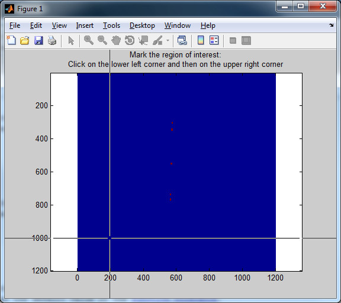

This allows searching for peaks (bright round spots on dark background) and tracking them with the MATLAB function 'bwlabel.m' and / or fitting a Gauss function. This procedure might result in a higher resolution compared to calculating the correlation coefficient. There are three different options:
For peak tracking you need to create a list of images 'filenamelist.mat' as described in Generate file list. The identified peaks can be further processed with 'DisplacementAnalysis' as introduced in Analyze results.
Type '[ValidX,ValidY]=LabelPeaks;' at the MATLAB command prompt. You are asked for the base image which will be used to identify the peaks (maxima with a value higher than a threshold grey value) after the background has been subtracted. Then you need to specify the region of interest for searching peaks.

After identifying the peaks 'LabelPeaks' will automatically start to fit all the peaks and plot their residuals. Minimizing the MATLAB console window will increase processing speed. The window title indicates the status of the processing and the estimated time it will take.
At the end of the processing, all relevant files will be saved in the current folder: 'fitxy.dat' contains the fitting parameters for each peak, validx.dat' contains the x-position of each peak, and 'validy.dat' contains the y-position of each peak.
One relevant parameter 'ResNormRef' is not directly accessible, since this is an automated approach. 'ResNormRef' can be found in 'LabelPeaks.m' in line 118 and 235 and subsequently where the residuals of the fits in x- and y-direction are evaluated. Only the fits with a low residual will be further processed. If no fit fulfils that criterion, the function will crash. Therefore, you should make sure you do not use too high values for 'ResNormRef'.
Type '[ValidX,ValidY]= PickPeaks;' at the MATLAB command prompt. You will be asked how many peaks you want to identify. Then you need to specify the region of interest for each peak you want to track.
A blue circle will highlight the center of each selected area. It is very important that you choose an appropriate box size. It needs to be wide enough for the curve fitting to get enough data points. But if it is too big, you will trap several peaks in it that results in a bad fit (with a high residual value). A box size of 2 - 4 times of the visible peaks seems to be a good estimate.
After you picked all peaks, the software will start to fit all the peaks. You will see the actual image with blue circles on top indicating the peaks that are still in the fitting process. Vanishing circles indicate that the peak could not be fitted any more. The windows title shows the approximated total processing time and how much percent of the images are processed. After all images are processed, the data will be saved the same way as in the 'LabelPeaks' function.
Type '[ValidX,ValidY]= PickPeaksLine;' at the MATLAB command prompt. First you need to choose if you want to use the original image (as it is) or the inverted version. Then you have to specify if the image should be processed in horizontal mode (as it is) or in vertical mode (rotated around 90°). In a next step, you can choose if you want to select each peak separately ('Single Select') or if you prefer automatic processing. In manual mode you have to mark each peak by clicking left and right of it.
Then hit 'On more' if you want to mark another peak or 'Continue' if you like to start the fitting process. The remaining procedure is analogue to the 'PickPeaks' function.